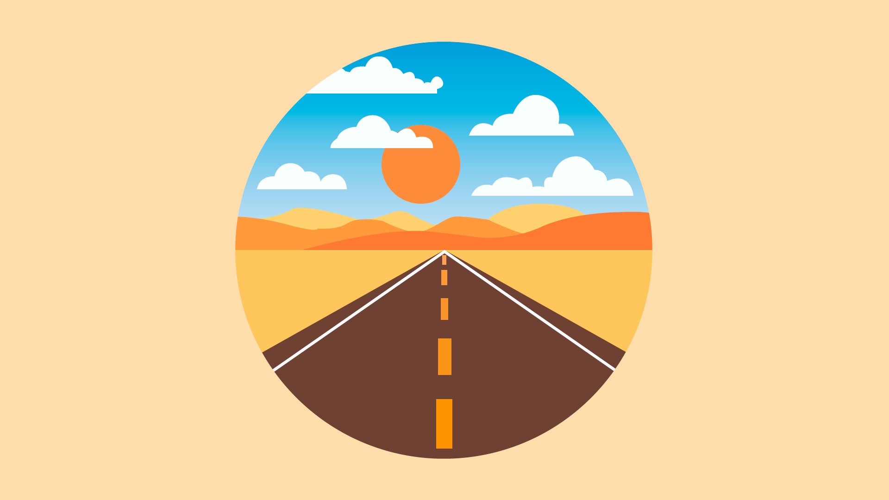
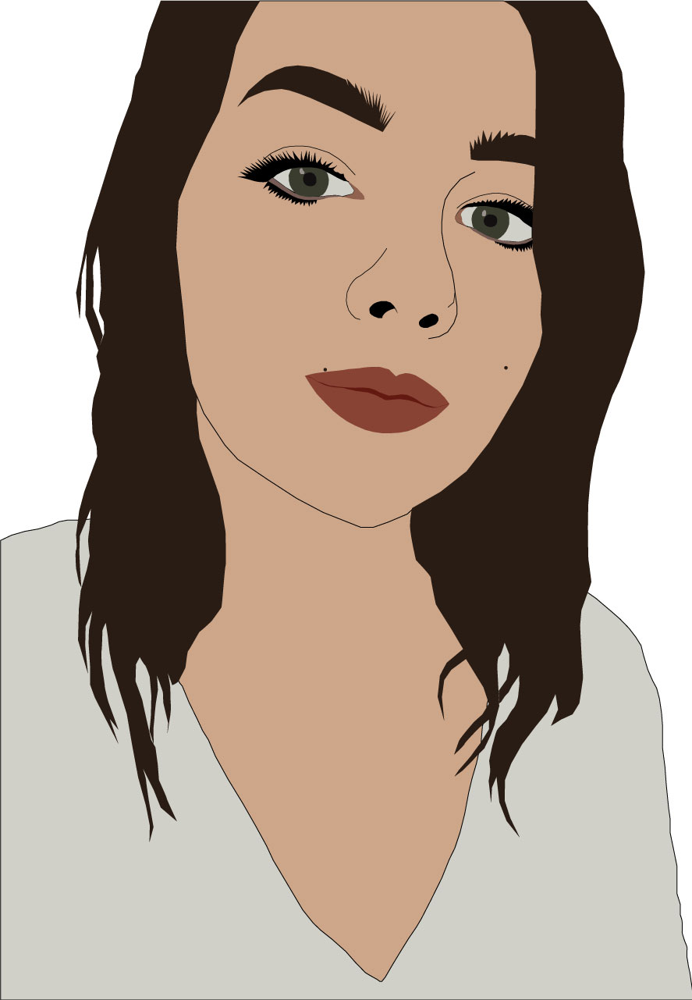

Her er et udvalg af noget af mit arbejde.
Det er primært lavet i løbet af mit første semester som multimediedesigner.

LANDSKAB I EN CIRKEL
Dette var mit første forsøg på at
skabe et billede i Adobe Illustrator.
Jeg har prøvet på at skabe et mere
eller mindre fuldendt landskab,
som så foregår inde i en cirkel.
SELVPORTRÆT
Her har jeg ved brug af et billede,
prøvet at skabe en illustration af
mig selv i Adobe Illustrator.

TYPOGRAFI
Dette var et forsøg på at bruge typografi
og diverse værktøjer i Adobe Illustrator,
til at bringe et enkelt ord til live.
Jeg har dog valgt at gå lidt efter
stilen af et logo.